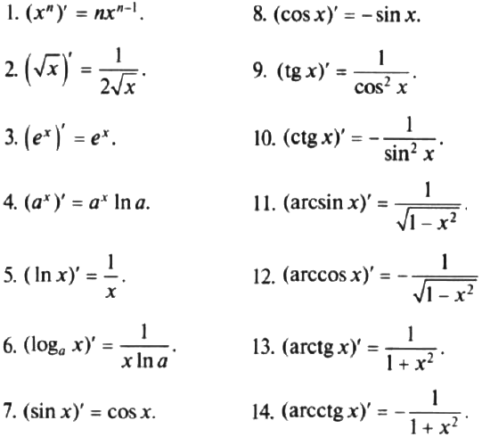

Önüm
Kesgitleme: Funksiýanyň x0 nokatdaky artdyrmasynyň argumentiň artdyrmasyna bolan gatnaşygynyň argumentiň artdyrmasy nola ymtylandaky predeline funksiýanyň x0 nokatdaky önümi diýilýär.
(x)' = 1. c – hemişelik san bolanda, c' = 0, ýagny hemişelik
sanyň önümi nola deňdir.
Differensirlemegiň formulalary:
c' = 0;
x' = 1;
(kx + b)' = k;
(x2)' = 2x;
(x3)' = 3x2;
( 1/x )' = -1/x2
cos'x = -sinx
sin'x = cosx
Önümi hasaplamagyň düzgünleri:
T e o r e m a : Eger u we v funksiýalar x0 nokatda differensirlenýän bolsalar, onda olaryň jemi hem bu nokatda differensirlenýändir we
(u + v)' = u' + v'
Gysgaça: jemiň önümi goşulyjylaryň önümleriniň jemine deňdir.
T e o r e m a . Eger u we v funksiýalar x0 nokatda differensirlenýän bolsalar, onda olaryň köpeltmek hasyly hem bu nokatda differensirlenýändir we
(uv)' = u'v + uv'.
Netije: Eger u funksiýa x0 nokatda differensirlenýän funksiýa, c hemişelik san bolsa, onda cu funksiýa hem bu nokatda differensirlenýändir we
(cu)' = cu'.
T e o r e m a . Eger u we v funksiýalar x0 nokatda differensirlenýän bolsalar hemde v funksiýa bu nokatda noldan tapawutly bolsa, onda uv paý hem x0 nokatda differensirlenýändir we
(u/v)' = (u'v + v'u)/v2
Derejeli funksiýanyň önümi
x n' = nxn-1
Çylşyrymly funksiýanyň önümi.
T e o r e m a : Eger g funksiýanyň x0 nokatda, a funksiýanyň bolsa y0(y0 = g(x0)) nokatda önümi bar bolsa, onda x nokatda f çylşyrymly funksiýanyň hem önümi bardyr we
f'(x0 ) = (a(g(x0 )'= a( g (x0 ))*g'(x0 ) .
Käbir funksiýalaryň önümleri:
